Live demos
Demos to try
Apps for dispatch, maintenance, knowledge, quality management and health and safety, two cockpits and four websites show what we build for small and mid-sized companies. Every demo runs with sample data right in your browser. Your input stays in your browser only.
All demos
Pick an application
Every app can be tailored. The demos are a starting point: we extend the existing apps completely and tailor them to your company. We add or remove functions, tables and fields as you need, as many as you like.
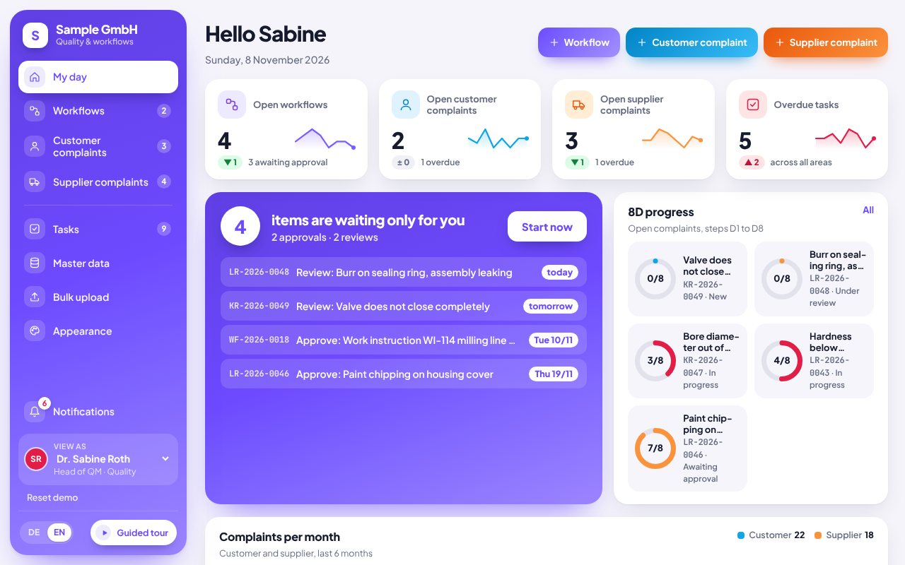
Workflow and complaints in one app
Workflow management, customer complaints and supplier complaints in one app, with shared master data, tasks and Excel bulk upload. Switch between the areas in the navigation on the left.
Open app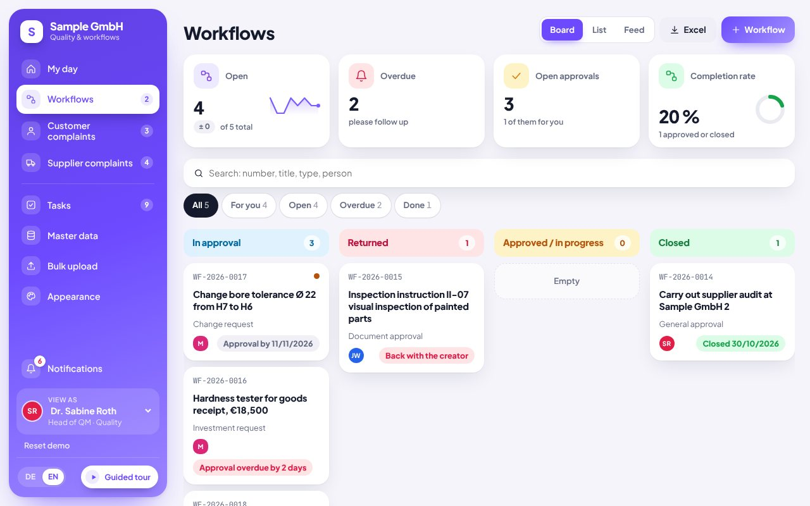
Workflow Management
Requests, approvals and documents move through departments digitally, with approval chains, reminders and escalation.
- Approve or reject a workflow
- Create a new workflow with an approval chain
- See open tasks per person

Customer complaints (8D)
Customer complaints handled with the 8D method, with roles, deadlines, costs and escalation through to the finished 8D report.
- Create a new customer complaint
- Work through the 8D steps
- Switch between board, list and feed
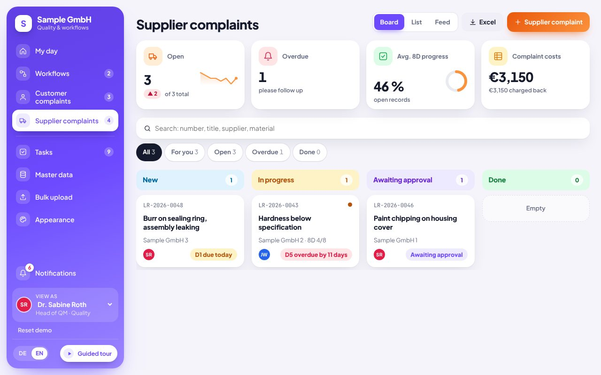
Supplier complaints
Resolve defects in purchased parts with the supplier: 8D steps, deadlines, costs and escalation, all traceable in one place.
- Create a supplier complaint
- Open the 8D report
- Switch roles, for example to head of quality
Apps and dashboards
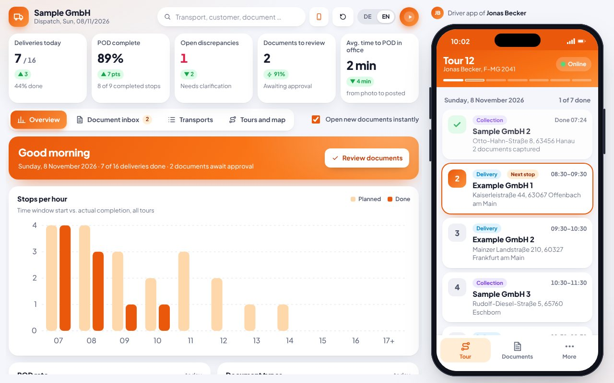
Proof of delivery with AI
Drivers photograph the delivery note, CMR or invoice on their phone. AI recognises the document type, reads customer, supplier, numbers and quantities and fills in the order and transport. Dispatch sees it instantly.
Things to try
- Photograph the sample delivery note at stop 3
- Correct uncertain fields and approve
- Go offline and send everything later
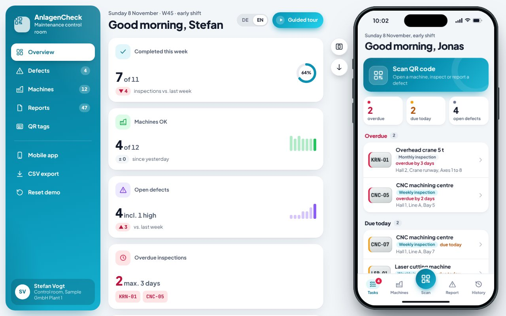
AnlagenCheck: inspections by QR code
The phone app opens right away: scan the QR code on the machine, work through the checklist with measurements and tolerances, report defects with a photo. The control room sees every entry live.
Things to try
- Scan CNC-07 and run the weekly check
- Enter a reading outside the tolerance
- Move the phone aside, watch the control room
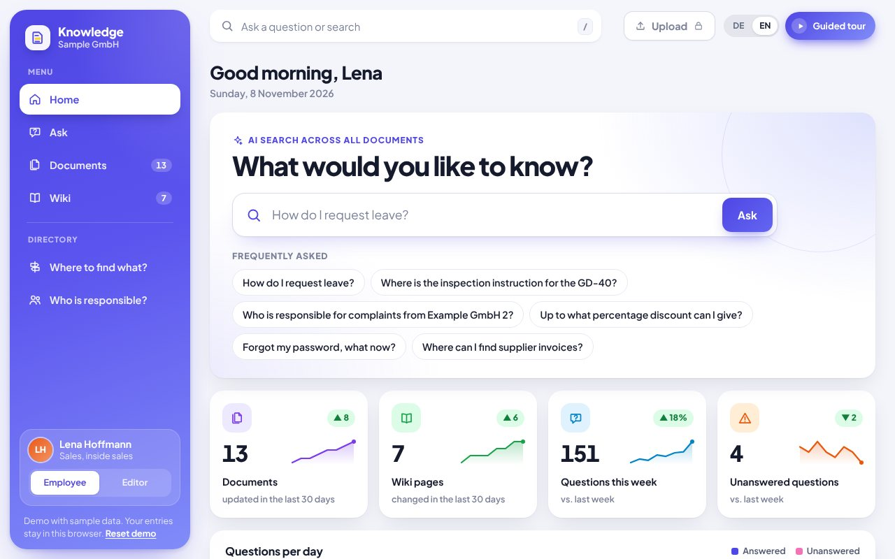
Knowledge base with AI search
Ask instead of searching: answers from PDFs, Word files and the wiki with sources. Upload documents, keep the wiki up to date, and see where to find what and who is responsible.
Things to try
- Ask a question and open the sources
- Upload a sample PDF and ask about it
- Answer an open question as editor
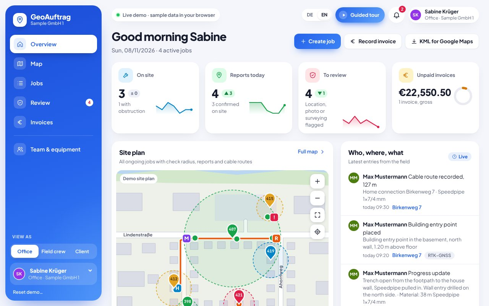
GeoAuftrag: field jobs with GPS proof
Field crews report from their phone with automatic location, photo stamp and material used. The office sees who did what and where. The client monitors every site of every contractor and confirms the booked material.
Things to try
- Send a report from your phone
- Simulate a wrong location and check it under “Review”
- Record a cable route on the map
- As the client, review all sites and material usage
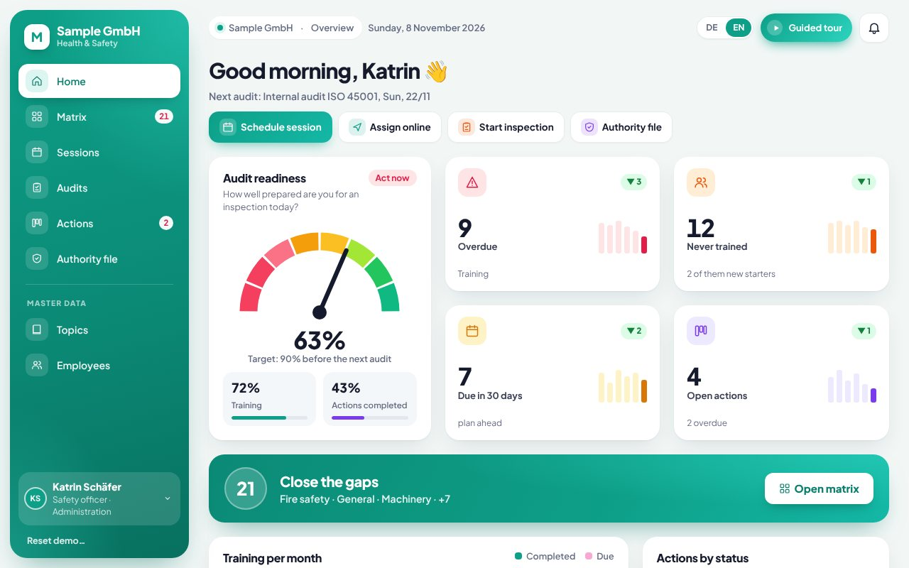
Workplace safety app
Who needs which safety briefing, and what is overdue? Online briefings with quiz and signature, audits with checklists and a folder with every record the authorities ask for.
Things to try
- Open the briefing matrix
- Run through an online briefing with quiz
- Create the folder for the authorities as a PDF
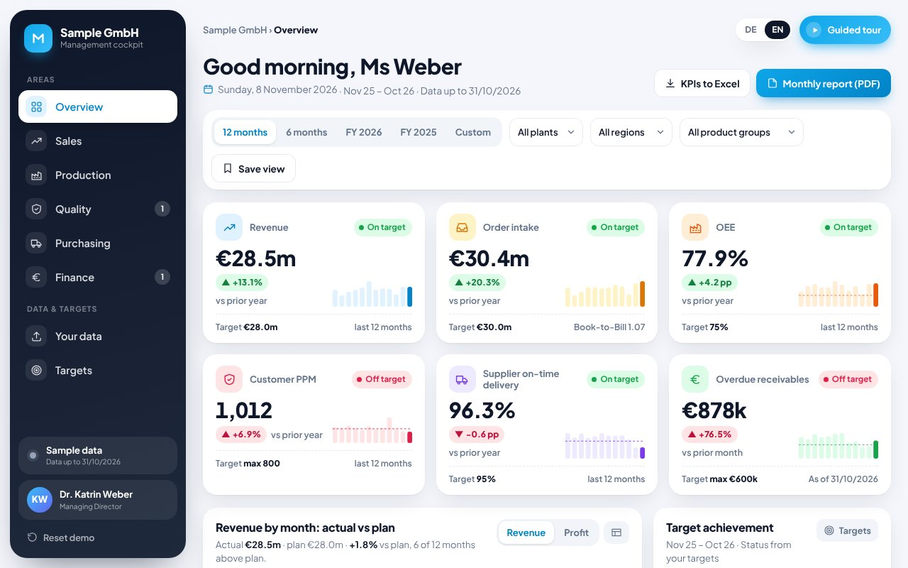
Management cockpit
Sales, production, quality, purchasing and finance at a glance. With drill-down, filters, saved views and Excel upload for your own figures.
Things to try
- Click a KPI to drill down
- Filter by plant and region
- Upload your own Excel file

Production and quality cockpit
OEE, scrap in ppm, on-time delivery, downtime, first pass yield and complaints with 8D status. Filter by period, line and machine, with targets and traffic lights.
Things to try
- Tap line 2 and compare OEE
- Open a machine in the heatmap
- Change the OEE target and watch the status

QM app: quality management for SMEs
Build inspection plans by drag and drop and inspect on your phone, with measured values, photos and documents. A failed check becomes a complaint with a workflow in one click, and EN 10204 certificates are created straight from the results. In English and German.
Things to try
- Drag a checkpoint into an inspection plan
- Inspect on your phone and enter a value outside the tolerance
- Turn the deviation into a complaint with a workflow
- Open an inspection certificate 3.1
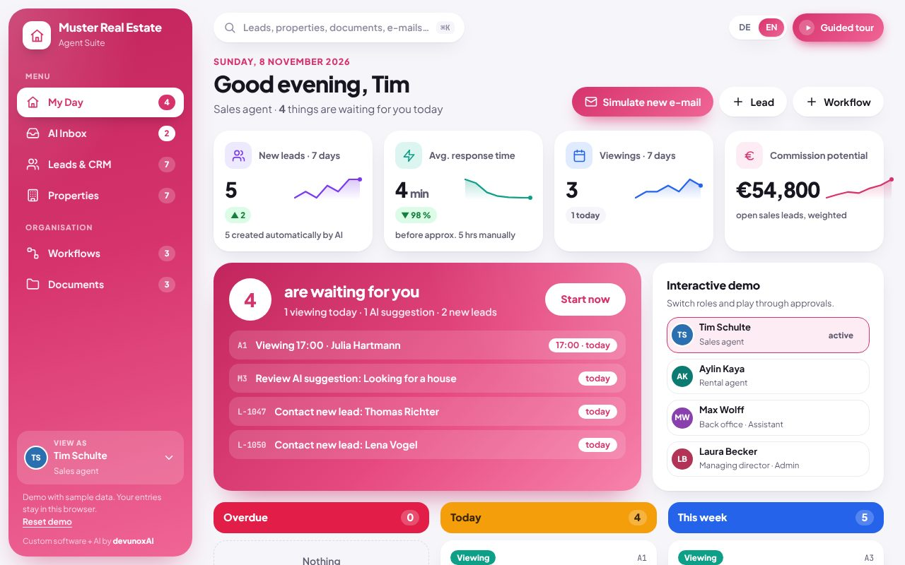
Estate agent suite with AI
Enquiries from e-mails and portals become leads automatically: the AI extracts contact, property, budget and financing and assigns the agent. Plus a CRM with pipeline, workflows with approvals and document management with AI, with four roles to try out.
Things to try
- Simulate a new e-mail enquiry and watch the lead appear
- Paste your own enquiry and let the AI analyse it
- Drag a lead to “Reserved”
- Approve the exposé as the managing director
Websites
We actually built these websites. For data protection reasons we show them with generic names. People, addresses and data are changed; structure, design and features match the real sites.
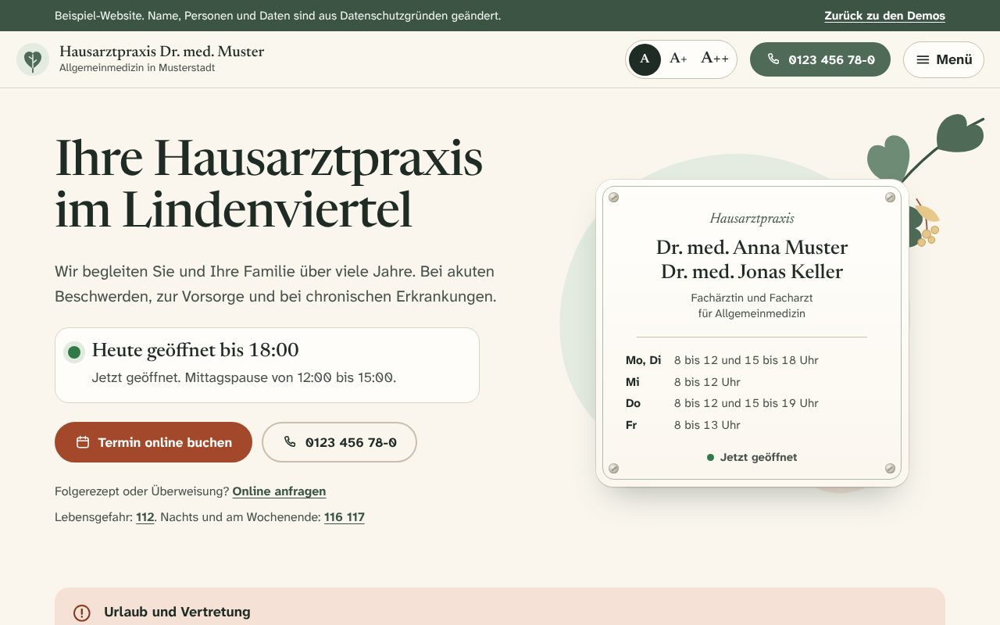
Website for a GP practice
Calm, highly readable practice website with live opening status, online booking in five steps, prescription requests and adjustable text size.
Things to try
- Book an appointment in five steps
- Request a repeat prescription
- Switch the text size to A++
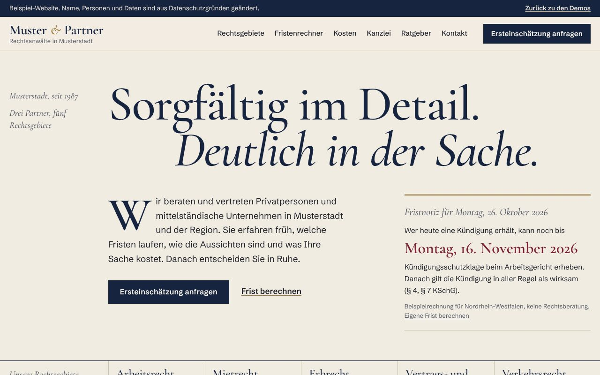
Website for a law firm
Editorial-style law firm website with practice areas, a deadline calculator, transparent fees and a five-step initial assessment.
Things to try
- Calculate a deadline that moves for a holiday
- Request an initial assessment in five steps
- Open a practice area and check deadlines
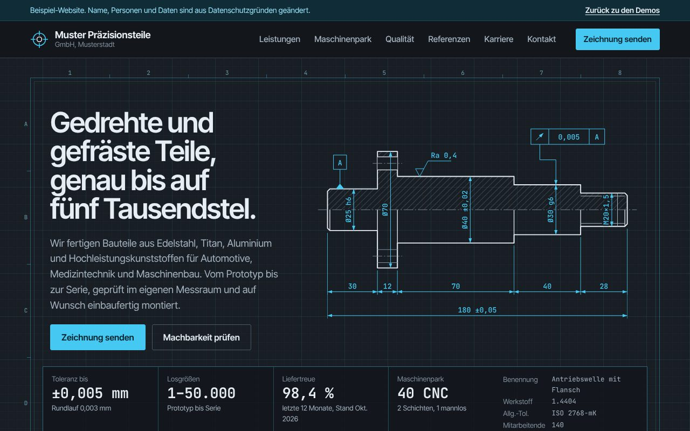
Website for a machining company
Technical website styled like an engineering drawing: filterable machine list, feasibility check, certificates and a quote request with drawing upload.
Things to try
- Enter dimensions and find a matching machine
- Upload a drawing and get a reference number
- View the assembly as an exploded view
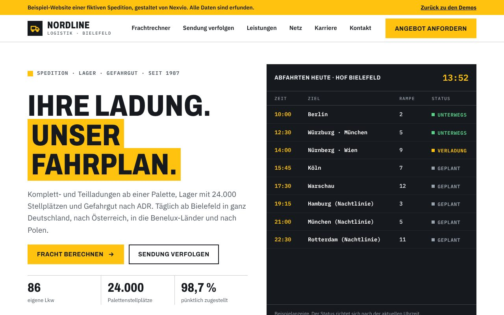
Website for a freight forwarder
Website for a freight forwarder in its own design: freight calculator with loading metres, shipment tracking, departure board and route network.
Things to try
- Work out loading metres and a guide price
- Track a sample shipment
All demos also run on a phone. GeoAuftrag, Proof of Delivery and AnlagenCheck use real GPS or the camera there if you allow it.
GeoAuftrag on the phone
How field crews report from the site
The crew view runs in the browser on any phone, no app store needed. Try it right here: you are signed in as technician Max Mustermann.
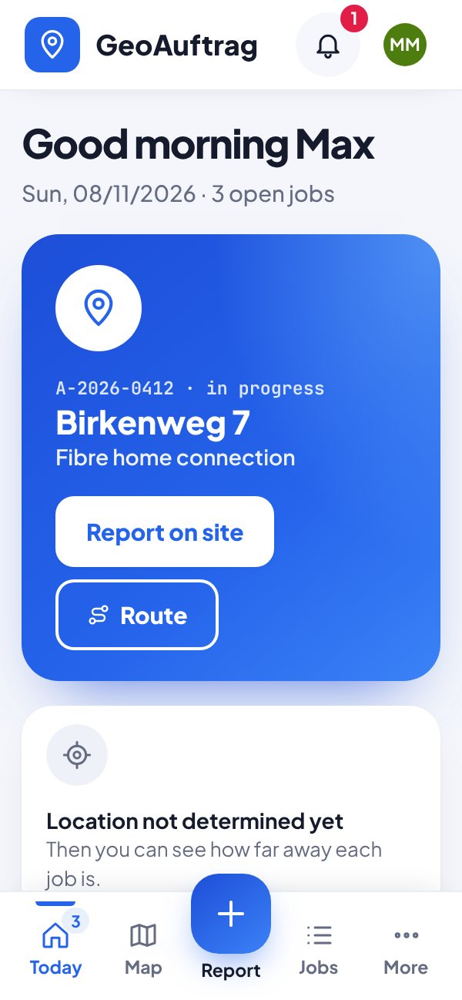
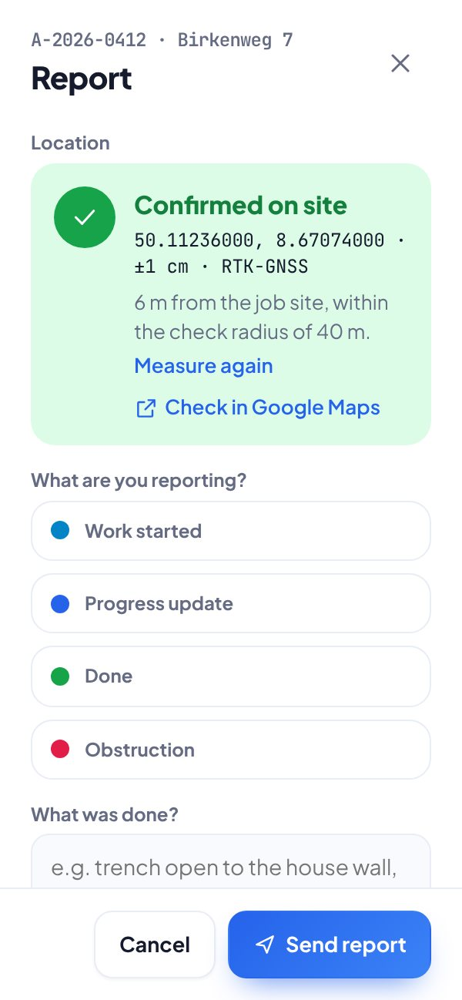
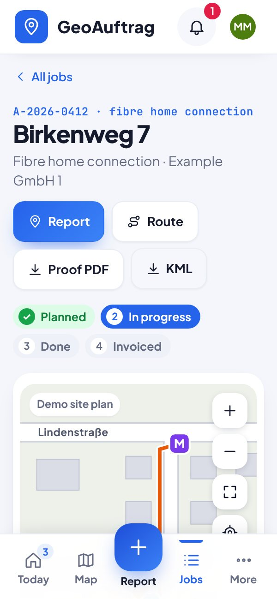
Open the job
“Today” lists the day’s jobs with address, due date and a route to Google Maps.
Report on site
One tap on “Report on site” measures the location by GPS and checks it is within the site’s tolerance radius.
Photos and hours
Photos get time, coordinates and job number stamped on them. Add working hours and who was on site.
Draw the cable route
Walk or place cable routes and markers right on the site plan. The office sees everything at once and can invoice.
Book materials
Book materials used, such as 10 t of sand or 100 m of copper cable, right with the report. The client sees planned versus actual per site and confirms the quantities.
Tell us what costs you time
In a free intro call we find out where automation or custom software pays off for you.
Request an intro call